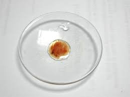
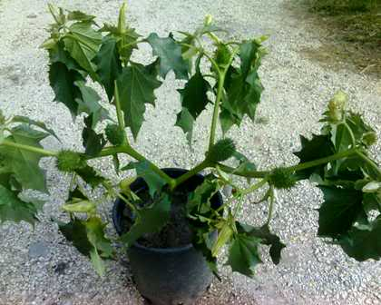

Ora che la meravigliosa estate che citavo nel post n.240 è finita, ne rimangono... i frutti.
La bella pianta di Datura metel del 240 ha prima trasformato i fiori in piccole palline bitorzolute che poi si sono evolute, cresciute e sbocciate come vediamo.
Contengono tanti piccoli semi ovoidali schiacciati, durissimi e naturalmente molto amari e velenosi, come si conviene agli alcaloidi tropanici tipici delle solanacee Datura (scopolamina, atropina, hyosciamina, ecc.).

Come avevo preannunciato ho fatto qualche piccolo test su questi semini, condotti in maniera veloce ed estemporanea (e sui quali non mi soffermo), coi reattivi di Liebermann (NaNO2 in H2SO4) e di Wagner (I2 in KI acq.) che la bibliografia cita, fra gli altri, per questi alcaloidi.
Ecco il risultato del primo test: la colorazione rossastra conferma la presenza degli stessi.

Ho provato anche col reattivo di Marme (CdI2 in KI acq.), ma con esito negativo.
Alla fine dell'inverno proverò a piantare alcuni semi in qualche angolo ombroso, e dedicherò gli eventuali virgulti proprio alla faccia di chi ritiene le "sostanze chimiche" tutte cattive e le "sostanze naturali" tutte buone.

A proposito di alcaloidi dei quali poco o per niente si parla: ho vicino a casa delle altre pianticelle del tutto spontanee... che presenterò in una prossima occasione.
1 commenti